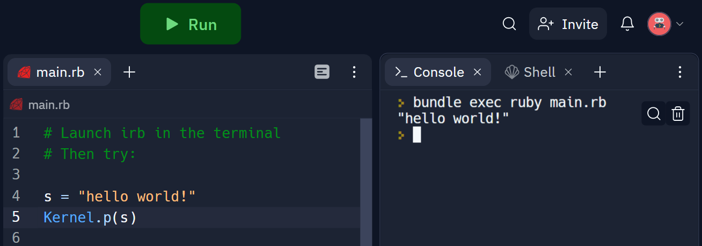

1.2 A few program notes
Before we continue, I want to pause and discuss what, why, and how we’re going to be learning.
1.2.1 What’s our goal?
Our goal is to build and deploy a fully-functional application, which will require that we learn a little bit about every part of the “stack” — the interface that users interact with all the way through to the server that the application runs on.
We’re going to work from the inside-out. We’ll start by learning how to manage information with a database, because that is the heart of any useful application. Then we’re going to learn how to expose an interface for users to get information in and out of our database — we’ll be starting with a web client because that’s the quickest way to get up and running, but we could add an iPhone or Android client later.
1.2.2 Why Ruby?
For all of the above, we’re going to use the Ruby language. There are many languages we could have chosen, but Ruby has a lot of advantages for beginners:
Developer happiness
Compared to other languages, Ruby is a pleasure to write and to read. Here’s Yukihiro Matsumoto (a.k.a. “Matz”), the creator of Ruby:
Often people, especially computer engineers, focus on the machines. They think, “By doing this, the machine will run faster. By doing this, the machine will run more effectively. By doing this, the machine will something something something.” They are focusing on machines. But in fact we need to focus on humans, on how humans care about doing programming or operating the application of the machines.
— Yukihiro Matsumoto, The Philosophy of Ruby
Matz’s focus when he designed Ruby was on “developer happiness”, which was pretty bold back in 1995 when Ruby was first released. Optimizing for human readability rather than computer readability meant paying a cost in terms of performance, and computers were slow back then; but Matz didn’t care.
Happily, computers are very fast today From a business perspective, servers are very cheap while developers are very expensive; so you should pick the language that makes developers the most productive., and they can run Ruby just fine; so now we beginners can have the best of both worlds. Besides, once you’ve learned the basic concepts of programming, they’re not hard to translate into the syntax of another language If you decide to pursue software development, you’ll end up learning at least half-a-dozen languages. Whatever challenge is thrown your way, you’ll choose the right tool for the job..
Ruby on Rails and other libraries
People often ask “What’s the best language for task X?” Depending on the task, sometimes a language is particularly well-suited to it technically; but that is very rare. In general, any programming language can do anything that any other language can (unless maybe there is some kind of proprietary platform lock-out).
However, there’s another very important consideration: which language has the largest community of developers doing task X? More community means more shared code (known as libraries, or in Ruby-land, gems), more blog posts, more answers when you Google a question, etc.
BENP: do we need an aside on gems with some more detail here?
For example, Python and Ruby are very similar languages in terms of their technical features and performance profile. However, by some historical accident, Python seems to have gathered more of the scientific/data analysis/machine learning community around it, so more open-source libraries in those areas have been developed and shared in Python than in Ruby; and so now Python is the go-to language for those tasks.
On the other hand, for agile development of database-backed applications, Ruby has a huge and thriving community. In particular, there is an open-source library for building applications called Ruby on Rails (“Rails”, for short) that makes small teams or even solo developers incredibly productive. The existence of Rails alone makes the Ruby language a good choice Here’s a longer blog post on why Ruby on Rails is still a good choice in 2019: ¶ https://devbrett.com/2019/03/why-i-believe-rails-is-still-relevant-in-2019.html for both startups and beginners.
The philosophy of Rails is “convention over configuration” — it makes a lot of decisions on your behalf, and if you go with the flow, then things “just work”. (If you want to fiddle with settings, then of course you can, to your heart’s content; but you don’t have to spend hours or days doing so before anything will even show up, like you do in most other frameworks.) You can focus on building the unique features of your application, not on plumbing that’s common to all applications.
There are a lot of other powerful, easy-to-use Ruby libraries that have philosophies similar to Rails. Ruby seems to have gathered a community of developers around it who are more about creating value for our users, and less about bike shedding over technical details I, personally, agree with this author who prefers boring technologies over cutting-edge ones: ¶ https://mcfunley.com/choose-boring-technology.
MINASWAN
The programming world at large can be pretty competitive and harsh, but I’ve found that the Ruby community is very inclusive and welcoming, which is a relief for beginners. Maybe this can also be traced back to Matz; from his Wikipedia page,
His demeanor has brought about a motto in the Ruby community: “Matz is nice and so we are nice,” commonly abbreviated as MINASWAN.
Heroku and other integrations
Another way in which the ergonomics of Ruby excels is the amount of tooling that exists around it. For example, Heroku was the first “platform as a service”, a layer on top of Amazon Web Services that makes it incredibly easy to deploy applications to an industrial-grade infrastructure. Something that would have itself required a whole separate course to learn how to do, we can now do with just one click; and we can focus instead on building features for our users.
Rails was the first platform that Heroku supported, and Rails developers are still Heroku’s primary users. There are many other services, everything from performance monitoring to error reporting to email delivery to A/B testing to analytics, that offer tight integrations with Ruby and/or Rails and make using them hyper-productive for small teams, solo developers, and therefore also for us beginners.
1.2.3 How are we going to go from zero to Hero(ku)?
To go from complete beginner to deploying a fully functional application is quite a bit of ground to cover. Here’s how we’re going to do it:
Cloud editors
As you’ve already seen, we’re going to start by writing Ruby right here in your browser. This is the lowest-friction way to get started, and will allow us to focus on learning Ruby without having to waste mental energy on installing tools.
Later, if you decide to continue with software development for the long-term, you may want to install Ruby on your own computer and switch to a more powerful code editor. We’ll provide guidance on how to do that.
Make the invisible visible
One of our foundational principles while programming, learning, and almost anything else, is to find a way to make the invisible visible — that is, find a way to give yourself concrete feedback on what you’re doing. Don’t guess what’s happening at each step of the program — find a way to see what’s happening, if at all possible. Feedback is crucial.
Printing values
Let’s talk a little bit more about how the REPLs work. So far, we’ve been using IRB to run one line of Ruby at a time. But our programs will be thousands of lines long, ultimately; and we want to save them permanently into files, not type them in one line at a time.
So, from now one we’ll write them in the editor on the left side of the REPL window; then we’ll run the program by clicking “▶ Run” and seeing the output in the neighboring terminal.

There won’t be any output unless we specifically say what we want to print into the terminal. It turns out there’s a special method in Ruby called Kernel.p (p is short for “print inspect”) that will display its argument in the terminal. Try running the following in a REPL:
s = "hello world!".upcase
t = s.reverse
u = t.gsub("L", "Z")
Kernel.p(s)
Kernel.p(t)
Kernel.p(u)✏️ Exercise: Click here for a REPL to try it.
Printing values to the terminal is something we’re going to want to do a lot, and so Ruby makes it easy for us; rather than having to type Kernel.p, we can just type the shorthand of p. Change Kernel.p to p above and give it a try.
Optional parentheses around arguments
To make it even easier to make the invisible visible, here’s another shortcut:
When we discussed Arguments, we said that they always come within parentheses. That’s not quite true. Ruby allows you to, optionally, leave out the parentheses; so the following will also work:
p "HELLO WORLD!"And when you are roaming the internet, you will see this style often, especially with p.
My advice to you is: you can drop the parentheses when you are printing, but other than that, always include them. They help to keep things clear, and they prevent order-of-operations errors.
Use p a lot
I like to use p a lot while I am programming. As I said, one of my fundamental programming principles is make the invisible visible — don’t try to guess what’s going on, find a way to see what’s going on. p is an excellent tool for that, so I use p like crazy, sometimes before almost every line while I am debugging.
It can be tedious to wrap every line in parentheses, and it’s convenient instead to just pop a p at the beginning of a line. So in this one case, I give you permission to omit the parentheses around arguments to a method. Enjoy!
Passing tests
The REPLs are good for experimentation and getting a feel for how things work. But, in the following chapters, we’re also going to have a separate GitPod assignment with exercises that include automated tests. You will have to complete these exercises as you go through the chapter and rails grade to ensure comprehension. Hopefully this will surface questions — our constant goal.